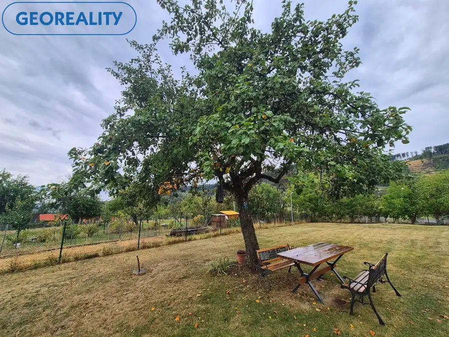
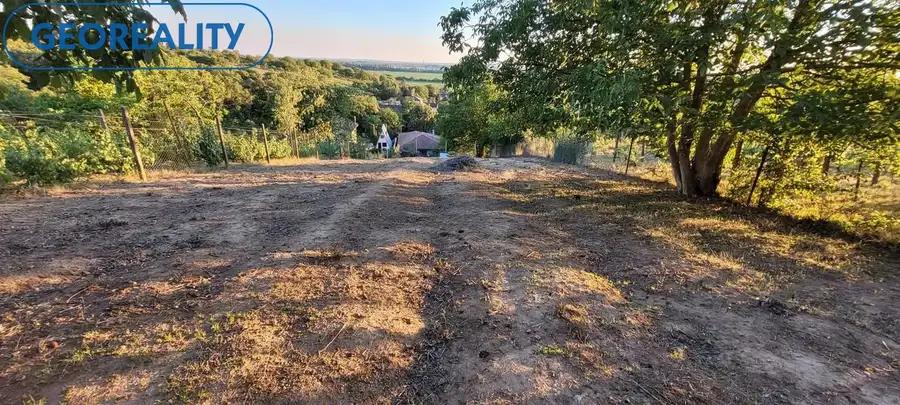
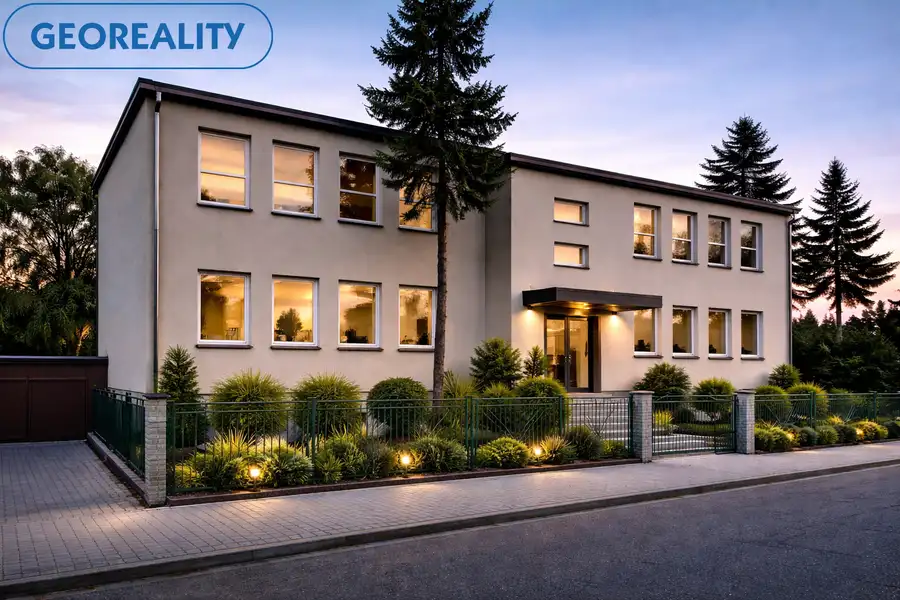

Predaj rodinného domu v obci Kozárovce
Kozárovce
- Plocha510 m²
- StavVo výstavbe
- VlastníctvoOsobné
O nehnuteľnosti
Ponúkam Vám na predaj dvojpodlažný rodinný dom v obci Kozárovce, ktorá je vzdialená len približne 15 minút jazdy autom od mesta Levice a 5 km od najbližšieho vjazdu na diaľnicu.MOŽNOSŤ DOKONČIŤ PODĽA VLASTNÝCH PREDSTÁV.________________________________________Základné informácie:• Celková výmera pozemku (zastavaná plocha a nádvorie): 625 m²• Zastavaná plocha domu: 115 m²• Kolaudácia: 1981• Výmena plastových okien s izolačným dvojsklom: 2010• Konštrukcia: murovaný, tehlový dom• Stav: prebiehajúca kompletná rekonštrukcia – možnosť dokončenia podľa vlastných predstáv (v každej miestnosti je príprava na klimatizáciu)________________________________________Dispozícia domu:Prízemie:• Veľká obývacia izba prepojená s kuchyňouo príprava na klimatizáciuo výstup na dvor cez balkónové/terasové dvereo v kuchyni je príprava na ,,ostrovček,,• Príprava na spoločnú kúpeľňu s WC (rozvody vody sú natiahnuté aj na poschodie)• Komora• Technická miestnosť (prípravy na technológie)Poschodie:• 4 samostatné miestnosti – aktuálne majú všetky nové sieťky natiahnuté a stierku / hrubé betónové podlahy• Chodba s prípravou na kúpeľňu so sprchovým kútom podľa projektovej dokumentácie• Schodisko so zábradlím• Balkón s výhľadom________________________________________Technické informácie:• Elektrina privedená do domu – trojfázový prúd, automatické ističe• Obecný vodovod + vlastná studňa• Žumpa aj kanalizácia• Strecha: dvojplášťová plochá strecha s krytinou zo živicového privarovaného pásu• Plastové vchodové dvere• Zastrešený vstup – možnosť využitia ako veranda alebo terasa• Dom je suchý, nezateká, v dobrom technickom stave________________________________________Pozemok a ďalšie stavby:• Oplotený pozemok s novým geometrickým plánom• Garáž• Hospodárska/technická budova (pôvodne hospodárska budova, dnes sklad/bicykle/stavebný materiál) – 2 miestnosti• Altánok• Možnosť parkovania vo dvore – dostatok miesta na dostavanie prístrešku na vozidlo• Rozľahlý a slnečný + rovinatý pozemok________________________________________Lokalita:Dom sa nachádza v tichej časti obce bez zvýšeného hluku z dopravy.V obci sa nachádza:• základná škola a materská škola• zdravotné stredisko• kultúrny dom a obecný úrad• detské ihriská a športoviská• reštaurácia a kaviareň• železničná a autobusová stanica je v tesnej blízkosti• kompletné inžinierske siete________________________________________Moje odporúčanie:Nehnuteľnosť je ideálna pre rodinu, ktorá hľadá dom s možnosťou dokončenia podľa vlastných predstáv. Veľkou výhodou je pokojná lokalita, kompletná občianska vybavenosť a dobrá dostupnosť do mesta. Na pozemku sa nachádza obrovská vŕba, ktorá počas letných dní vytvorí príjemné miesto na oddych a stretnutie s rodinou.Možnosť využiť aj na prenájom, čo je v tejto lokalite tiež veľmi žiadanéNaše ceny sú vrátane provízie za kompletný servis a sú schválené majiteľom! Máme dlhoročné skúsenosti aj v oblasti financií a túto službu ocenilo už veľa našich spokojných klientov. Prevedieme Vás celým priebehom obchodu až po samotné odovzdanie nehnuteľnosti. Ak vás moja ponuka zaujala, neváhajte ma kontaktovať, dohodneme si obhliadku na ktorej vám nehnuteľnosť rada ukážem. Využite naše služby a pridajte sa do veľkej skupiny našich spokojných klientov. Tiež vás pozývame na IG georealitylv, na našu FB stránku: Georeality Levice - realitná kancelária, kde môžete pozorne sledovať našu každodennú prácu a tiež na: www.georealitylv.sk Maklér: Marta Mináriková, mail: minarikova@georealitylv.sk, tel. 0902 862 749
Parametre
| Doprava | Cyklistická infraštruktúra, Diaľkový autobus, Diaľnica, Vlak |
|---|---|
| Druh | Rodinný dom |
| Dátum zverejnenia | 22. 2. 2026 |
| Energetický certifikát budovy | nie je |
| Plocha pozemku | 115 m² |
| Počet balkónov | 1 |
| Počet nadzemných podlaží | 2 |
| Počet pivníc | 1 |
| Počet vonkajších parkovacích miest | 1 |
| Prístupová komunikácia | Asfaltová |
| Rok kolaudácie | 1981 |
| Rok poslednej rekonštrukcie | 2025 |
| Rok výstavby | 1981 |
| Stav nehnuteľnosti | Vo výstavbe |
| Terén pozemku | Rovinatý |
| Typ | Predaj |
| Typ konštrukcie | Tehlová |
| Vlastníctvo | Osobné |
| Vybavenie | Balkón, Predzáhradka, Pivnica, Vonkajšie parkovacie miesto, Záhrada |
| Vykurovanie | Klimatizacia |
| Zastavaná plocha | 625 m² |
| Úžitková plocha | 510 m² |
Kde to je


Mohlo by Vás zaujímať

PozemokNové9 59 900 €Pozemok na predaj v obci Nová Baňa + stavebné povolenie Nová Baňa 1529 m² Ponúkam na predaj pozemok so schváleným stavebným povolením v tichej lokalite – Nová BaňaPozemok je udržiavaný a nachádza sa v atraktívnej lokalite…
PozemokNové6 32 000 €Rekreačný pozemok v časti Staré Levice Levice 1000 m² Ponúkame na predaj rekreačný pozemok v časti mesta Staré Predné Levice s pekným výhľadom a v tichej časti mesta.Rozloha pozemku 1000m2(Šírka pozemku…
Komerčné priestoryNové10 310 000 €Na predaj administratívna budova s parkovaním v Leviciach Levice 720 m² Ponúkame na predaj samostatne stojacu administratívnu budovu v Leviciach s veľkým potenciálom využitia. Objekt má suterén a dve nadzemné podlažia a…